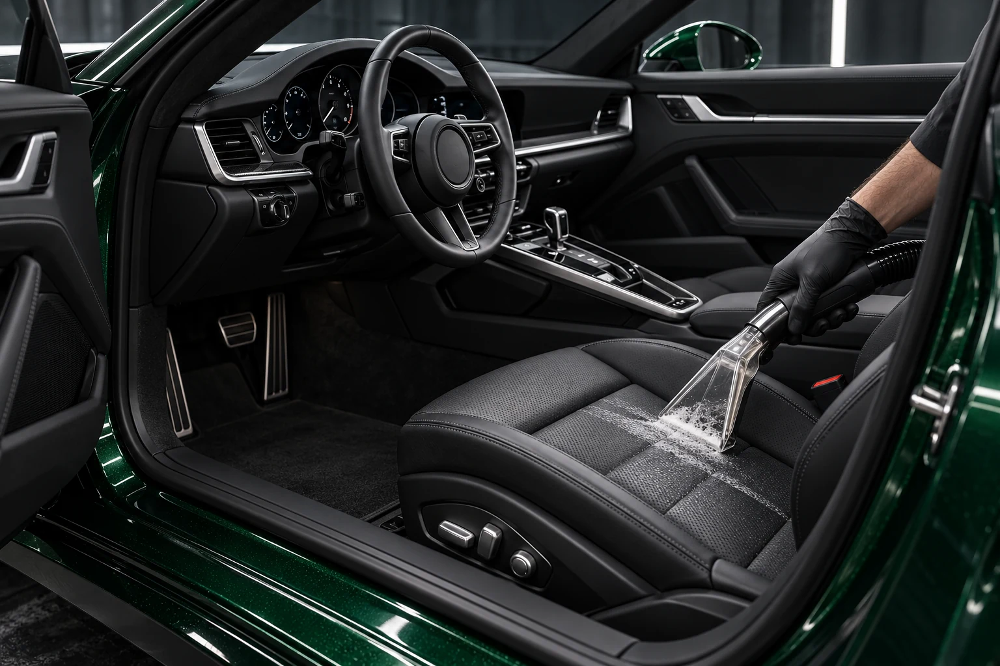

Уход за салоном
Внутри —
так же важно.
Текстиль, кожа и декоративные поверхности не требуют одинаковой обработки. Состав работ строится вокруг материала, загрязнений и состояния салона.
Подобрать программу
Состав работы
Каждый этап
имеет значение.
- 01
Осмотр материалов
Определяем зоны внимания, особенности отделки и состояние поверхностей.
- 02
Последовательная очистка
Работа с доступными зонами салона, сиденьями и деталями с учётом выбранного состава.
- 03
Сушка и проверка
Технологические паузы, контроль результата и рекомендации по повседневному уходу.
До начала
Что согласуется
со студией?
Состояние автомобиля, выбранные зоны, материалы, стоимость и срок. Дополнительная работа обсуждается до выполнения, а не появляется в счёте при выдаче.
После выполнения
Как сохранить
результат?
Получите рекомендации по уходу именно за выбранными материалами. Уточните технологические ограничения и подходящий режим дальнейшего обслуживания.
СОБЕРЁМ СОСТАВ ПОД ЗАДАЧУ
Ваш автомобиль.
Ваш выбор.
Перейти к подборуПредварительный расчёт — ориентир.
Окончательная стоимость определяется после осмотра.